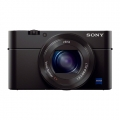
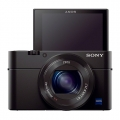
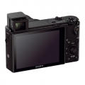
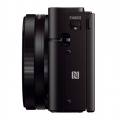
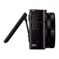

器材库 > 不可换镜头数码相机 > DSC-RX100 Ⅲ

规格总览
发布日期
2014-05-16
影像规格
影像传感器
Exmor R CMOS
影像传感器尺寸
13.2×8.8mm
有效像素
2010万
影像处理器
BIONZ X
静态图像尺寸
[3:2]5472×3648,3888×2592,2736×1824[16:9]5472×3080,3648×2056,2720×1528[4:3]4864×3648,3648×2736,2592×1944,VGA[1:1]3648×3648,2544×2544,1920×1920[扫描全景]宽尺寸12416×1856,5536×2160标准尺寸8192×1856,3872×2160
静态图像格式
JPEG, RAW
画幅比
3:2, 4:3, 16:9, 1:1
短片尺寸
AVCHD:28MPS(1920×1080,50p), 24MFX(1920×1080,50i), 17MFH(1920×1080,50i), 24MFX(1920×1080,25p), 17MFH(1920×1080,25p)XAVC S:50M(1920×1080,50p), 25p50M(1920×1080,25p), 100p50M(1280×720,100p)MP4:12M(1440×1080,25fps), 3MVGA(640×480,25fps)
短片格式
MP4, AVCHD 2.0, XAVC S
防抖系统
光学防抖
镜头和对焦
镜头结构
10片/9组
非球面镜片
9片
焦距
8.8mm-25.7mm
等效35mm画幅焦距
24mm-70mm
最大光圈
f/1.8-2.8
光学变焦
2.9倍
数码变焦
[静态影像] 20M约11倍/10M约16倍/5M约23倍/VGA约44倍（含光学变焦） [动态影像]（含光学变焦）约11倍
对焦模式
单次AF/连续AF/DMF/手动对焦
手动对焦
支持
曝光控制
测光模式
中央重点测光, 多分区评价测光, 点测光
场景模式
肖像 / 动作防抖 / 运动 / 微距 / 风景 / 黄昏 / 夜景 / 手持夜景 / 夜景肖像 / 宠物 / 美食 / 烟火 / 高感光度
快门速度
智能自动（4 秒 - 1/2000 秒）/程序自动（1 秒 - 1/2000 秒）/光圈优先（8 秒 - 1/2000 秒） / 快门优先（30 秒 - 1/2000 秒）/手动曝光（B 门，30 秒- 1/2000 秒）
曝光补偿
±3EV以1/3EV级调整
ISO感光度
160, 200, 320, 400, 640, 800, 1000, 1250, 1600, 2000, 3200, 6400, 12800, 250, 500, 2500, 125, 4000, 5000, 8000, 10000
白平衡
日光, 白炽灯, 闪光灯, 阴天, 自定义, 阴影, 自动, 荧光灯（冷白色）, 荧光灯（日光白色）, 荧光灯（日光）, 荧光灯（暖白色）, 色温/滤光片
自拍
10秒, 2秒, 关闭, 自拍定时（连拍）
连拍
约10张/秒
拍摄模式
程序自动 / 光圈优先 / 快门优先 / 自动（智能自动 / 增强自动）/ 手动曝光 / 调出存储 / 动态影像（程序自动 / 光圈优先 / 快门优先 / 手动曝光）/ 场景选择 / 扫描全景
闪光灯
内置闪光灯
弹出式
闪光模式
自动, 强制闪光, 禁止闪光, 后帘同步, 低速同步
闪光涵盖范围
ISO 自动模式下 约0.4m 到 10.2m /ISO 12800，可达约20.4m
取景规格
取景器
电子取景器
取景器像素
约144万
LCD类型
Xtra Fine LCD
LCD尺寸
3.0英寸
LCD像素
约123万
LCD特性
翻转屏
亮度调节级数
5档
文件输入/输出
存储卡
MS/MS PRO记忆棒, SD/SDHC, SDXC
数据接口
USB2.0
视频/音频接口
Micro HDMI 输出
无线功能
Wi-Fi, NFC
电源
电池
NP-BX1（附带）
续航能力
[静态影像] 约 320张/160 分钟（LCD），约 230张/115 分钟（取景器）（CIPA标准）[动态影像] 约 85 分钟*11（LCD），约 90 分钟*12（取景器）（CIPA标准）
外观
颜色
黑色
尺寸
101.6×58.1×41.0mm
重量
含电池与记忆棒约290g / 仅主机约263g
其它
附件
可重复充电电池 NP-BX1，电源适配器 AC-UB10C/UB10D，Micro USB 连接线，腕带，挂件适配器，使用说明书
karaoke2015-01-30 13:133.25 分
操作性 4.00功能性 4.00美观性 4.00趣味性 4.00耐用性 1.00性价比 3.00解像力 3.00色彩还原 3.00
托塔天熊2014-08-20 16:524.13 分
操作性 5.00功能性 5.00美观性 4.50趣味性 4.00耐用性 4.00性价比 2.50解像力 4.00色彩还原 4.00
产品图 / 样片
RX100 Ⅲ

RX100 Ⅲ

RX100 Ⅲ

RX100 Ⅲ

RX100 Ⅲ
评测 / 相关文章
- 详细内容 （存档）
- 专业随身再升级 索尼RX100M3实拍评测 （存档）
- ［试用］远摄微距功能增强 索尼RX100 III海外试用 （存档）
- ［试用］索尼RX100M3评测样张 （存档）
- ［试用］索尼最新黑卡RX100M3入手开箱 （存档）
- ［资讯］索尼黑卡RX100 Ⅲ官方样片欣赏 （存档）